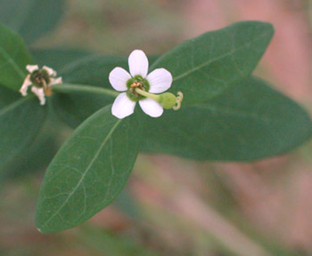

Previous || Next || Return to Mystery Plants || USC Herbarium
This Week's Mystery Plant | Dr. John B. Nelson Curator, USC Herbarium |
|
Humans are very good at coming up with mental images of what various objects around them ought to look like. It is a basic way of bringing order into the chaotic world in which we live. For instance, when you think of the word "flower," you generally have a reasonably well-defined notion of what a typical flower looks like: sepals, petals, stamens, and pistils, even if you don't know all the parts like a botanist. This week, we have a plant that offers us something that looks like a flower…or is it? It is a very common herb, found throughout South Carolina, and indeed all of the Southeastern states. It occurs as well into southern Canada and into the Midwest. It grows in a number of high-ground habitats, as it prefers dry feet. The stems are slender, green, and leafy, usually not any more than about knee-high. The leaves alternate upward from the plant's base, and then commonly form whorls or rings, toward the top. The stems and leaves contain a thin, whitish fluid which we term latex. (This latex is potentially toxic, so the plants should NOT be chewed or ingested.) It blooms in late summer and into the fall. What appears to be a single flower is actually more than that. A green, cuplike structure has five prominent white lobes around the margins. The lobes, of course, look like they should be separate petals. Tiny male flowers, each consisting of a single stamen, line the interior of the cup. In the interior of the cup is an odd, bulbous thing that hangs out on a tiny stalk. This is actually a highly reduced female flower, which bears no petals at all, and consists only of a pistil. Its swollen ovary will eventually produce a tiny capsule, with three seeds inside. The whole structure, including the cup, the lobes, male flowers and female flower, is referred to as a peculiar inflorescence called a cyathium. You may not have seen this plant at all, or at least not close up. However, you probably have seen one of its very close relatives, the well-known holiday poinsettia. Sure enough, at your next Christmas get-together, look and see if there aren't some cyathia nestled amongst the bright red bracts. You'll be the hit of the party as you share this botanical story with all your friends! |
 Photo by Linda Lee |